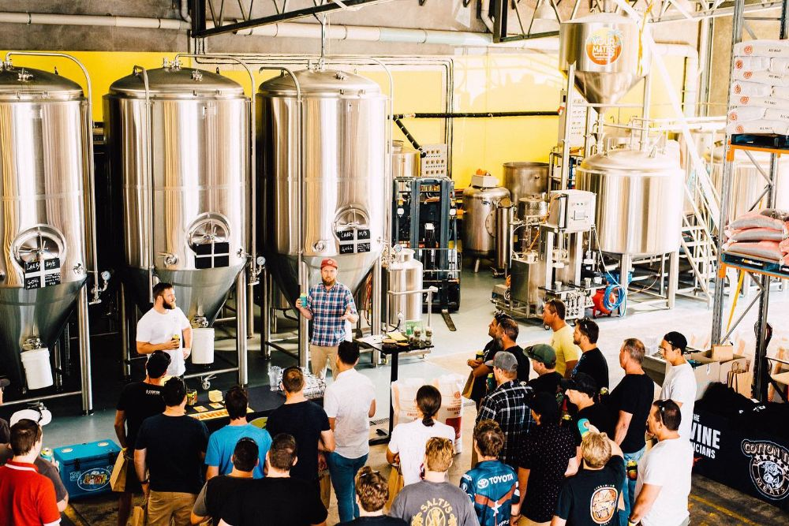
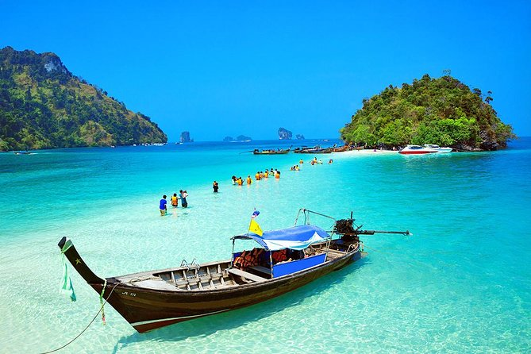
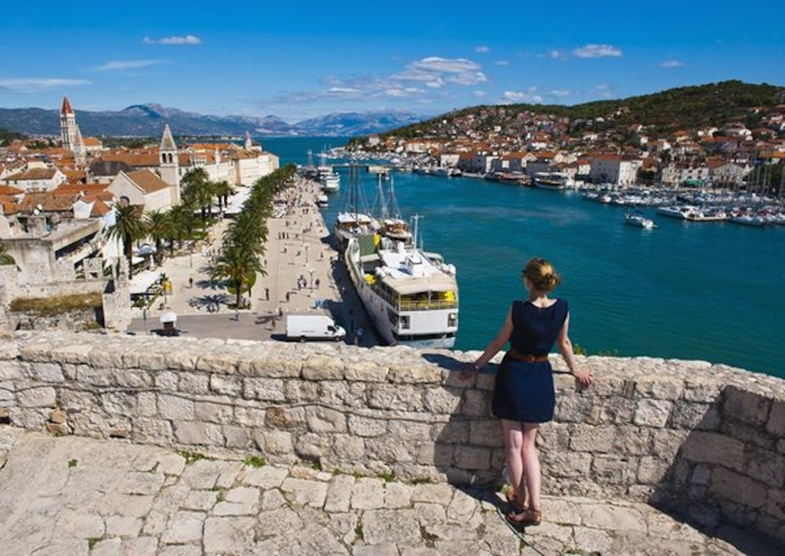
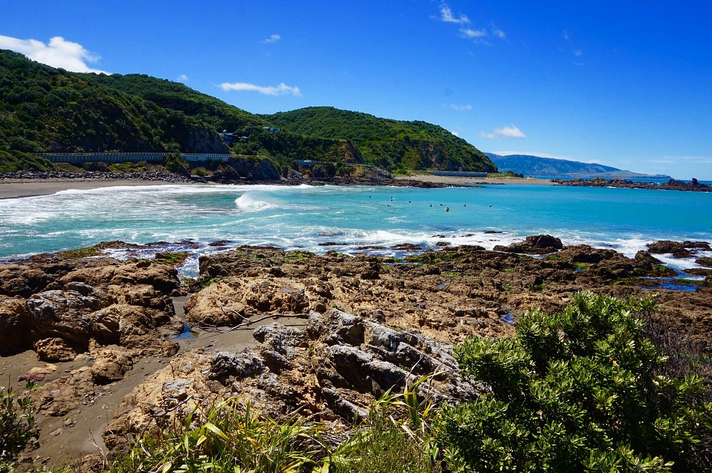
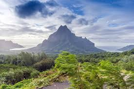

Most people visit Taniti to enjoy the beaches, explore the rainforest,
and to visit the volcano. However, there are other things to do,
including visiting a local history museum, going on chartered fishing
tours, snorkeling, zip-lining in the rainforest, visiting several
pubs, including a microbrewery, dancing at a new dance club, seeing a
movie, taking helicopter rides, playing at an arcade, visiting art
galleries, and bowling. Also, a nine-hole golf course should be
operational by next year. Many of these activities are
located in Merriton Landing, which is a rapidly developing
area on the north side of Yellow Leaf Bay.

Taniti offers a range of unforgettable tours that showcase the island’s natural beauty and rich culture.
Adventure seekers can embark on guided hikes up Mount Tanoa, the island’s active volcano, where expert
guides share insights into its geology and legends while leading you to breathtaking crater views. For
a more relaxed experience, boat tours around Yellow Leaf Bay offer stunning vistas of the coastline,
snorkeling opportunities among coral reefs, and visits to hidden coves. Cultural walking tours through
local villages and rainforest excursions round out the experience, giving visitors a deep, immersive
look at the heart of Taniti.
For the more adventurous at heart, Taniti also offers rainforest zipline tours! Traverse the treetops on a series
of ziplines, immersing yourself in the island's rich biodiversity and lush greenery.
You can even experience Taniti from above with helicopter tours that provide breathtaking aerial views of Mount Tanoa,
Yellow Leaf Bay, Merriton Landing, and the lush rainforests. These flights offer a perspective of the island's beauty
that is simply unparalleled.
For more information and to book tours in advance,
call +698 (504) 234-2345.

Merriton Landing, located on the north side of Yellow Leaf Bay, promises an unforgettable entertainment experience for everyone. Immerse yourself in the local culture by catching a captivating play or a touring performance at the historic Seaview Theater. Step into nostalgia at the retro arcade, brimming with vintage games and neon lights that evoke fond memories. Art lovers will be enchanted by the diverse galleries showcasing the incredible talent of Tanitian and regional artists. If you’re in the mood for some action, the city's bowling alley offers an exciting way to spend your evening. As the sun sets, the energy amplifies with live music and dancing at popular beachfront venues, where locals and visitors come together to enjoy the enchanting atmosphere beneath swaying palms and starlit skies. Don’t miss out on the magic of Merriton Landing!

Yellow Leaf Bay is a serene tropical retreat known for its crystal-clear waters, soft golden sands, and
swaying palm trees. The bay is framed by vibrant rainforest and dramatic cliffs, offering a perfect mix
of relaxation and natural beauty. Ideal for swimming, snorkeling, and kayaking, the calm waters reveal
colorful coral reefs and abundant marine life just beneath the surface. Whether you're lounging on the beach
or watching the sunset from a boat, Yellow Leaf Bay captures the peaceful essence of island life.
Please keep in mind Taniti's water preservation guidelines to help maintain this beautiful natural
resource for generations to come. Any questions or concerns can be directed to
the Tanitian Department of Fish and Wildlife.

Rising above the island is Taniti's own Mount Tanoa, the primary volcano that created Taniti.
Visitors can climb the slopes of this majestic volcano, with several overlooks on the path
to observe the island. Don't worry, although classified as active, Mount Tanoa tends to be
quiet.
Please observe the daily news report and trail signage. The trail may be closed due to poor weather
conditions, seismic activity, or other hazards. This is determined by the Tanitian Fish & Wildlife
Department, Taniti Meteorological Society, and City Hall.